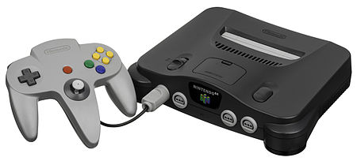

The worldwide pioneer in the creation of interactive entertainment, Nintendo Co., Ltd., of Kyoto, Japan, manufactures and markets hardware and software for its Wii U™ and Wii™ home consoles, Nintendo 3DS™ and Nintendo DS™ family of portable systems. Since 1983, when it launched the Nintendo Entertainment System™, Nintendo has sold more than 4.2 billion video games and more than 669 million hardware units globally, including the current-generation Wii U, Wii, Nintendo 3DS, Nintendo DS, Nintendo DSi™ and Nintendo DSi XL™, as well as the Game Boy™, Game Boy Advance™, Super NES™, Nintendo 64™ and Nintendo GameCube™ systems. It has also created industry icons that have become well-known, household names such as Mario™, Donkey Kong™, Metroid™, Zelda™ and Pokémon™. A wholly owned subsidiary, Nintendo of Europe, based in Grossostheim, Germany, was established in 1990 and serves as headquarters for Nintendo's operations in Europe.
The Nintendo 64 stylized as NINTENDO64 and often referred to as N64, is Nintendo's third home video game console for the international market. Named for its 64-bit central processing unit,It is Nintendo's last home console to use ROM cartridges to store games. While the N64 was succeeded by Nintendo's GameCube in November 2001, N64 consoles remained available until the system was retired in late 2003.
